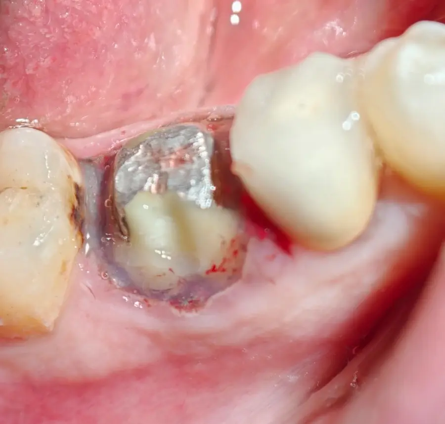

نسخه استخراجشده؛ ترجمه یا تأیید علمی انجام نشده است. وضعیت: captured
این دندان روکش قبلی دارد و بیمار از فود ایمپکشن شکایت دارد که به درد و التهاب لثه رسیده است. عامل فود ایمپکشن، کانتکت پروگزیمال نادرست روکش قبلی است. روکش خارج شد؛ حالا تراش را برای چه اصلاح میکنی؟

روکش خارج شد و ابتدا اصلاح تراش انجام شد. اصلاح تراش لزوماً ارتباطی با شکایت سابجکتیو بیمار ندارد: تراش اینجا اصلاح شد چون تراش قبلی ایراد داشت، نه به این دلیل که بیمار از فود ایمپکشن شکایت داشت.
فینیشلاین و دیوارهها اصلاح شدند. مشکل کانتکت، که علت شکایت بیمار بود، در مرحلهی طراحی روکش جدید حل میشود. این دو مسیر جدا هستند: تراش ایراددار حتی بدون هیچ شکایتی هم باید اصلاح شود.
بعد از اصلاح تراش، لثه خونریزی داشت. قبل از تصمیم دربارهی ریترکشن، محیط دندان ناحیهبهناحیه بررسی شد:
ژل هموستاتیک بر پایهی آلومینیوم اطراف دندان گذاشته شد و دو دقیقه صبر شد. بعد از کنترل مایعات و خشک شدن ناحیه، اسکن انجام شد؛ اسکن به میدان بدون خون و بدون مایع نیاز دارد.
ریترکشن با نخ یک پروتکل ثابت برای همهی نواحی نیست. تصمیم نخگذاری را بر اساس وضعیت واقعی سالکوس در هر ناحیه بگیر؛ جایی که سالکوس قابل ریترکت نیست، نخ بهجای کنار زدن بافت آن را زخم میکند، آسیب اضافه میزند و کیفیت اسکن را بدتر میکند.
نوع سؤال: ساخت کلمه · 7 خانه
حروف منبع: ی · ن · و · ل · ل · ا · گ